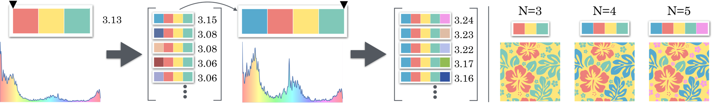

Pacific Graphics 2016

@article{Kita:PG2016,
title = {Aesthetic Rating and Color Suggestion for Color Palettes},
author = {Kita, Naoki and Miyata, Kazunori},
year = {2016},
journal = {Computer Graphics Forum},
volume = {35},
number = {7},
issn = {1467-8659},
year = {2016},
pages = {127--136},
url = {http://dx.doi.org/10.1111/cgf.13010},
doi = {10.1111/cgf.13010},
}